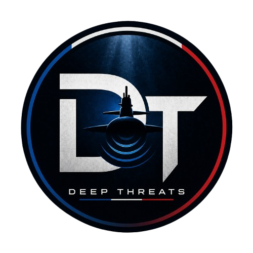

Rapports d'Investigation (Write-Ups)
Méthodologie détaillée de mes investigations avec une approche orientée Blue Team, CTI et OSINT.

CTF Deep Threats (DGA & Campus OSINT)
Découvrez la résolution pas-à-pas de l'investigation sur l'entreprise Marinatech Industries et l'Institut Lotus. (22 challenges résolus).
À vos marques
La reconnaissance initiale sur la cible : exploitation des réseaux sociaux professionnels et analyse du profil des dirigeants.
Lire le chapitreEn eaux troubles
Plongée dans l'investigation avancée : traçage de transactions cryptographiques (Blockchain OSINT) et analyse d'en-têtes réseau.
Lire le chapitreWhat's up doc ?
Fouille approfondie au sein des instances académiques et analyse des publications de recherche liées aux menaces.
Lire le chapitrePartenaire particulier
Identification de réseaux d'influence et exploitation de documents partagés (Google Dorks / Métadonnées).
Lire le chapitreUne drôle de fleur
L'attaque de surface (EASM) sur l'Institut Lotus : analyse de vulnérabilités serveur, Directory Listing et découverte de réseaux cachés (.onion).
Lire le chapitreL'île mystérieuse
Application de techniques de GeoINT et d'IMINT pour la géolocalisation de précision d'infrastructures à partir d'images.
Lire le chapitreOscarZulu - OSINT & GEOINT
Plateforme d'entraînement francophone dédiée aux défis de renseignement géolocalisé (GEOINT) et à l'exploitation de données ouvertes.
Investigation : Petit Caillou
Géolocalisation par satellites, fouille d'archives municipales (Open Data) et recherche généalogique historique.
Lire le Write-UpDéfis Flash & Institutionnels
Résolution de challenges éclairs de type "Capture The Flag" publiés sur les réseaux sociaux par les agences gouvernementales (DGSE, ComCyber...) ou lors d'événements spéciaux.
DGSE - Cybermois
Analyse cryptographique (Morse), stéganographie visuelle et identification de pistes trompeuses (Red Herrings) sur un post officiel de la DGSE.
Lire le Write-Up